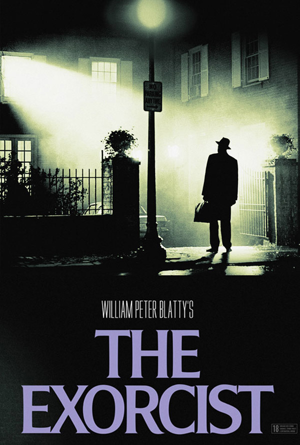

Chainsaw Massacre


If my memory serves me right, I have three distinct introductions into horror. The one I can remember, I was around 5 years old, I would sit in front of the boob tube on Saturday mornings watching “Scooby Doo, Where are You?” eating bowls of Lucky Charms and I was mesmerized by the Spaceman Ghost. About two years later at a Scout meeting, I would have been 7 years old, for Halloween and they played Frankenstein. It was then that my true love for horror began, I could not get enough. Again, about 2 years later, I was 9 and I thought I was ready for the hard stuff. CBS played movies in Sunday nights and they were premiering The Exorcist. I had never seen anything like. Growing up Catholic and attending a Catholic school did not help. This movie frightened me for weeks and I could not sleep because every noise would scare me awake. Many movies and TV shows have influenced my love for horror but those three shows are responsible for shaping my affinity for the genre.
|  | |
|
|
|
| The Exorcist | Frankenstein | The Texas Chainsaw Massacre |
Halloween | Evil Dead 1 and 2 |
|
|
This is a tough one for me because I feel one genre is not enough. If I have to choose one it would be Possession. The idea that a demon or some other spirit can takeover one’s body just freaks me out. Giant Monster is a very close second – GODZILLA!

The first one on my list is Session 9 – The overall tone and the feeling of dread that Brad Anderson conveys is exceptional. I am not a David Caruso fan but I felt his acting style fit in perfectly with what Anderson wanted to do.
Number 2 is Dog Soldiers – This movie is not talked about as much as it should be. This is Neil Marshall’s first full length movie directorial debut and he does not disappoint. The gore and wittiness of this flick make it a must see. Sean Pertwee delivers on all fronts.
Number 3 is Parents – This Bob Balaban movie holds a special place in my heart because it was one of the first horror movies that my grandmother watched with me and my brother, and she loved the movie. Balaban eerily puts together a film that makes you think “What do my parents do after I go to bed?” Also, it has Randy Quaid who is always over the top. I hope he gets a chance to work it Nicolas Cage. Balaban also directed an episode or two for the series; Tales from the Darkside, Amazing stories, and Eerie Indiana.
My most memorable movie experience is not horror related but it did help develop my affection for movies. In the summer of 1977, for my brother’s birthday, my parents took us to the movies. We thought it was going to be at the $1.00 theater, $.50 for kids, but to our surprise it was to see the first run of Star Wars. Back then it was just Star Wars not this Episode IV – A New Hope stuff. The fact that there were swords made of light, robots, aliens, space ships flying the speed of light and laser guns fascinated this 10 year kid. I could not tell you how many times I have seen this movie in the theater, I went every chance I got. Allowances were saved and spent on going to Star Wars movie and memorabilia. George Lucas and Gene Simmons have a lot of my money (KISS in an entirely different obsession).